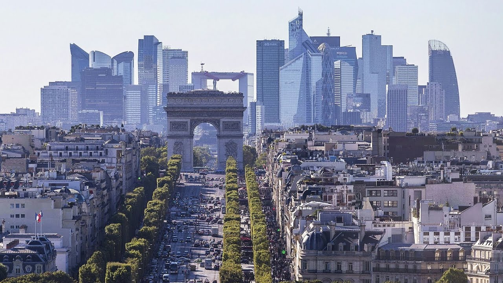

Genesis
In order to promote equity between students in France and mainly concerning the access to top schools, a group of students of Hec Paris gathered in 2021 into an association to put this concern to a vantage point
Meet our president

Pupil and then student in Corrèze, Center France, Baptiste formerly ignored the ways that were leading to schools such as Hec
Inequalities in France: rurality and access to top studies
How do young students feel about it?Meet us

